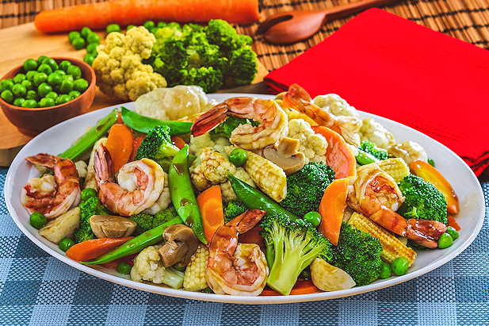

Capcay Saus Tiram

Foto: instagram/@makananenak
Bahan-bahan
3 sendok makan minyak goreng
50gr udang (buang kulit, dibelah punggung dan sisakan ekor)
2 sachet Saus Tiram Selera
300ml air
50gr jagung muda (iris)
50gr jamur kancing (iris)
25gr kacang polong
50gr brokoli (rebus 1/2 matang)
50gr kembang kol (rebus 1/2 matang)
20gr kapri (buang ujungnya)
1 buah wortel (rebus 1/2 matang)
4 butir bakso ikan (potong-potong)
2 batang daun bawang (iris serong)
Cara Membuat